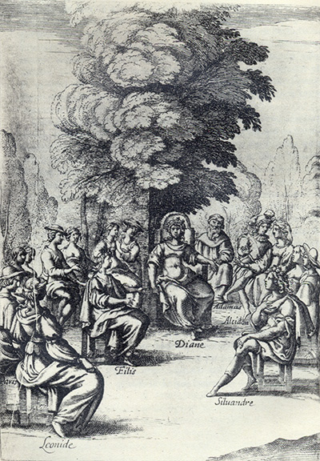
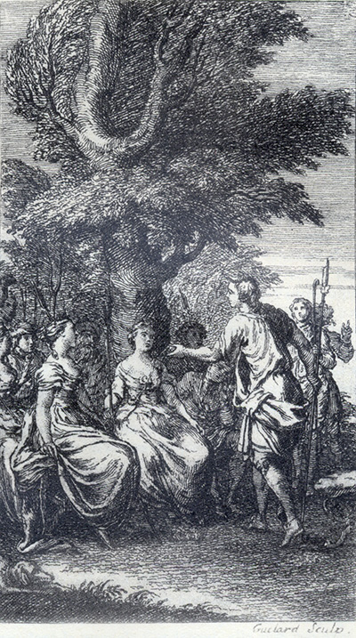
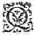
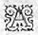
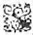

L'Astrée
d'Honoré d'Urfé
Troisième partie
Livre 9

Sous un arbre, Diane écoute Phillis et Silvandre plaider leur cause
Adamas, Alcidon, Léonide et Paris assistent au jugement (III, 9, 390 recto)
L'AstréeIII, 9. Édition Vaganay**, 1925Sous un arbre, Diane écoute Phillis et Silvandre plaider leur cause
Adamas, Alcidon, Léonide et Paris assistent au jugement (III, 9, 390 recto)
(Voir Illustrations)

Gravure signée Guélard
Hylas et Stelle discutent des conditions de leur entente (III, 9, 382 recto)
L'AstréeIII, 1. Édition Vaganay**, 1925Gravure signée Guélard
Hylas et Stelle discutent des conditions de leur entente (III, 9, 382 recto)
(Voir Illustrations)
Éd. de 1619, 356 verso sic 354 verso.
Éd. Vaganay, III, p. 469.
QUel enfer plein de rigueurA des peines plus cruelles
Que celles que dans le cœur
Je sens pour vous éternelles ?
Les ténèbres, les fureurs,
Les fers, les feux, les horreurs,
Bref, toute chose établie
Pour le tourment de là-bas,
Si ce n'est que je n'ai pas
Cette eau
η qui fait qu'on oublie.
ATteint η jusques au cœur d'outrage et de dédain,
Pendant que Céladon allait faisant la plainte
Qu'il avait si longtemps en son âme contrainte,
Une Nymphe grava ces regrets de sa main :
Si ce gentil berger arrosant son beau sein
De ses pleurs, les témoins d'une amitié
η non feinte,
Celle
η
dont il se deult de pitié n'est atteinte :
Qu'Amour ses feux éteigne, il les allume en vain.
Celle qui le verra sans aimer ce visage
D'une Tigre
Mais s'il en est Amant sans qu'aussitôt après
Elle n'aille brûlant d'une seconde flamme,
Outre qu'elle a sans doute un rocher pour une âme,
Il faut croire qu'Amour n'a ni flammes ni traits.
D'une Tigre
η cruelle aura bien le courage,Mais s'il en est Amant sans qu'aussitôt après
Elle n'aille brûlant d'une seconde flamme,
Outre qu'elle a sans doute un rocher pour une âme,
Il faut croire qu'Amour n'a ni flammes ni traits.
mais voyez ce qui est dans ce papier, si je ne me trompe, ce sont les mêmes caractères que les premiers. Et lors elles lurent toutes ensemble telles paroles :
I.
Soupirs, enfants de cette pensée qui sans cesse me tourmente, comment par votre violence n'éteignez-vous le feu de mon âme, ou comment ne l'allumez-vous de telle sorte qu'il me puisse consumer entièrement ?
II.
Soupirs, qui soulez être le soulagement de celui de qui la douleur vous conçoit, pourquoi à mon dommage changez-vous cette coutume, rengrégeant les cruels déplaisirs qui me tourmentent ?
III.
Soupirs, si vous sortez du profond de mon cœur avec une si grande peine, pourquoi ne l'emportez-vous plutôt où vous allez, afin de me donner ou la mort en me la ravissant
η,
ou la vie en la portant au lieu où est la source de ma vie ?
IV.
Soupirs, puisque c'est mon cœur qui vous
donne naissance, et que l'Amour est celui qui vous envoie vers celle où vous allez, pourquoi ne m'en rapportez-vous des nouvelles afin de conserver la vie de celui de qui vous naissez ?
V.
Soupirs,
qui naissiez autrefois dans l'excès de mon contentement, comment prenez-vous à cette heure naissance dans le plus fort accès de mes déplaisirs ?
VI.
Soupirs, les témoins
η
d'une âme qui désire,
comment sortez-vous de mon cœur, puisque tous mes espoirs étant perdus, tous mes désirs doivent être étouffés ?
Loin, bien loin, profanes esprits
η !
Qui n'est d'un saint Amour épris,
En ce lieu saint ne fasse entrée !
Voici le bois où chaque jour
Voici le bois où chaque jour
Un cœur qui ne vit que d'Amour
Adore la Déesse Astrée.
L'expérience étant celle qui rend les "
personnes prudentes, et qui apprend à "
mettre les remèdes nécessaires pour éviter "
les inconvénients où l'on a vu que "
les autres se sont auparavant perdus, nous "
ayant enseigné par les divers événements "
que nous avons remarqués
entre ceux "
PREMIÈREMENT.
Que l'un n'usurpera point sur l'autre cette
souveraine autorité, que nous disons être Tyrannie.
Que chacun de nous sera en même temps et l'Amant et l'aimé, l'aimée et l'Amante.
Que notre amitié sera éternellement sans contrainte.
Que nous aimerons tant qu'il nous plaira.
Que celui qui voudra cesser d'aimer le pourra faire sans reproche d'aucune infidélité.
Que quand nous voudrons sans nous séparer d'amitié, nous pourrons aimer qui bon nous semblera, et tant qu'il nous plaira continuer cette amitié, ou la quitter sans congé.
Que la jalousie, les plaintes et la tristesse seront bannies d'entre nous, comme incompatibles avec notre parfaite amitié.
Qu'en notre conversation nous serons libres, et sans nous contraindre, chacun fera et
dira ce qu'il lui plaira, sans nous incommoder l'un pour l'autre.
Que pour n'être point menteurs, ni esclaves en effet ni en parole, tous ces mots de fidélité, de servitude et d'éternelle affection ne seront jamais mêlés parmi nos discours.
Que nous pourrons tous deux ou l'un sans
l'autre, continuer ou cesser de
nous entre-aimer.
Que si cette amitié cesse de l'un des côtés ou de tous les deux, nous
pourrons la renouveler quand bon nous semblera.
Que pour nous astreindre à une longue amour ou à une longue haine,
nous serons obligés
nous entre-aimer.
Que si cette amitié cesse de l'un des côtés ou de tous les deux, nous
pourrons la renouveler quand bon nous semblera.
Que pour nous astreindre à une longue amour ou à une longue haine,
nous serons obligés
η d'oublier et les faveurs et les outrages.
" Qui voit son bien et ne le veut,
" À tort puis après il se deult
η.
nommé, j'ordonne qu'il sera écrit, mais de cette sorte :
Treizième et dernier article.
Que * nous, Stelle et Hylas, sommes si soigneux de notre liberté, et tant ennemis de toutes sortes de contrainte, qu'il nous sera permis, quand bon nous semblera, de n'observer une seule de toutes les conditions ci-dessus écrites et accordées.
et au reste de la compagnie, sans se rasseoir commença de parler de cette sorte :
de la Bergère Phillis.
du berger Silvandre.
de la bergÈre Diane.
Fin du neuvième Livre.

Livre 8

Livre 10
Référence électronique :
document.write('"'+document.title.substr(0, document.title.indexOf("-")-1)+'". '+"Dernière mise à jour : "+ExtractDate(document.lastModified)+".")Deux visages de L'Astrée.
©2005-2020 E. Henein.
URL :
var today = new Date();
document.write(document.URL +
"<br>Consulté le : " + today.toLocaleDateString("fr-FR") + ".");
var _gaq = _gaq || [];
_gaq.push(['_setAccount', 'UA-19288475-1']);
_gaq.push(['_trackPageview']);
(function() {
var ga = document.createElement('script'); ga.type = 'text/javascript'; ga.async = true;
ga.src = ('https:' == document.location.protocol ? 'https://ssl' : 'http://www') + '.google-analytics.com/ga.js';
var s = document.getElementsByTagName('script')[0]; s.parentNode.insertBefore(ga, s);
})();
Deux visages de L'Astrée.
©2005-2019 Eglal Henein. Creative Commons 4 
Édition critique de la première partie de L'Astrée (1607, 1621)
mise en ligne le 9 avril 2007
Édition critique de la deuxième partie de L'Astrée (1610, 1621)
mise en ligne le 10 octobre 2010
Édition critique de la troisième partie de L'Astrée (1619, 1621)
mise en ligne le 1er novembre 2014
Édition critique de la quatrième partie de L'Astrée (1624)
mise en ligne le 15 janvier 2019
document.write("Dernière mise à jour : "+ExtractDate(document.lastModified))